导入 CSV 文件
PortfolioPerformance 使用一个向导来引导你完成导入过程，共分三步。每一步你都需要提供额外信息。
第 1 步。首先，转到菜单 文件 > 导入 > CSV 文件（逗号分隔值）。浏览到相应文件夹并选择所需的 CSV 文件。默认情况下，文件类型筛选器只显示扩展名为 .csv 的文件。若要查看所有文件类型，请从下拉菜单中选择 全部文件 (*.*)。你也可以使用快捷键 Cmd + I（Windows 上为 Ctrl + I），再按字母 C。
CSV 文件本质上是一个纯文本文件。第一行通常包含字段（列）名称，以逗号之类的分隔符隔开。其后的各行是数据，同样以相同的分隔符隔开。所需字段及其格式取决于所执行的导入类型。列标题可以自由选取，但建议与 PortfolioPerformance 的字段名称保持一致，以简化映射过程（即把每一列与 PortfolioPerformance 中对应的字段关联起来）。
表 1 中所示的示例 CSV 文件包含五个字段（列）与三行数据，可用于把证券导入你的投资组合。
表 1：导入证券的源数据示例。
Ticker Symbol; ISIN; Security Name; Currency; Info
BAS; DE000BASF111; BASF; ; XETRA
NVDA; ; NVIDIA; USD; NASDAQ
在此示例中，字段分隔符使用了分号（;）。在欧洲，数字通常以逗号作小数分隔符书写；因此该 CSV 文件使用分号作为标记。请注意，NVIDIA 股票的 ISIN 并未提供。该文件在 Excel 中创建，并以 UTF-8 编码保存。不过，任何电子表格或文本编辑程序都可以用来创建这样的文件。值得注意的是，.csv 扩展名并非必需。只要把文件类型筛选器设为 全部文件 (*.*)，且布局符合表 1 所示的结构，PortfolioPerformance 同样可以读取纯文本文件。
在向导的第 2 步中，你需要提供额外信息，以便正确读取该 CSV 文件（见图 1）。
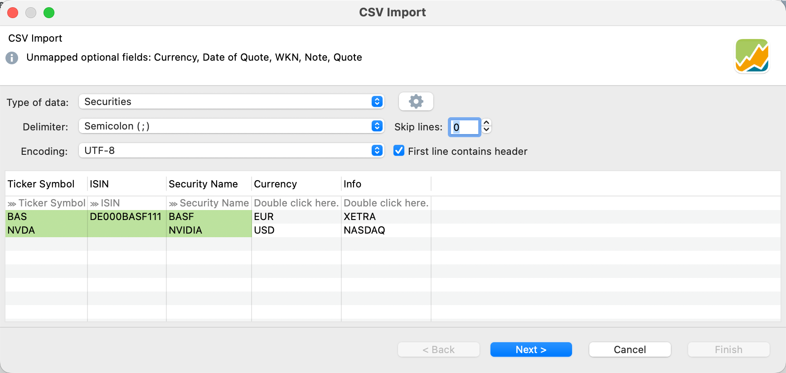
-
信息栏：额外信息显示在顶部的信息栏中。例如，它可能列出 CSV 文件中未提供的可选字段。
Note
虽然 CSV 文件中提供了
Currency字段，但它似乎未被 PortfolioPerformance 识别。 -
数据类型：PortfolioPerformance 区分 5 种导入类型：
账户账目、投资组合账目、证券、历史报价与证券账户（见图 1）。这些模板下文会详细讨论。点击下拉列表选择合适的类型。 -
分隔符：PortfolioPerformance 很可能已经选中了正确的分隔符；在表 1 的情形下是分号。不过，你也可以手动设置为其他分隔符，例如逗号、分号或制表符。
-
编码：输出表格中有时会出现"奇怪"的字符，这表明所选编码与源文件编码不匹配。可能的选择有很多，正确的选择取决于创建该文件所用的程序。
UTF-8或Windows-1250通常是合适的选择。 -
忽略行：你的 CSV 文件开头可能包含无关信息，例如额外的标题或元数据。使用该选项可指定在文件开头要忽略的行数。
-
首行为表头：如果你的 CSV 第一行包含字段标签（如同表 1），请启用该选项。
-
带映射字段的预览表：PortfolioPerformance 需要从 CSV 中确定与其内部字段相对应的列。如果 PortfolioPerformance 识别出了某个字段，preview 表格第二行会显示
>>> '字段'提示；否则会显示请双击此处。（见图 1）。要把某一列与 PortfolioPerformance 的内部字段关联起来，请双击第二行，然后从可用字段中选择。如果不想关联某个字段，请选择---选项。PortfolioPerformance 随后会忽略这一列。要更改某一列的格式（例如某个日期列的日期格式），请双击第二行中的列名。 -
保存配置（齿轮图标）：要保存当前映射，请点击"数据类型"右侧的齿轮图标。此时会显示一份
内置配置列表，例如 comDirect、Consorsbank 等。使用保存当前配置选项可把你当前的映射配置保存为自定义模板。该模板会出现在用户专有配置之下。你可以删除、导出与导入配置。导出功能使用 JSON 格式。
第 3 步因所选导入类型而异，并且可能包含多个子步骤。例如，导入历史报价时只有一个额外步骤（提供证券名称以关联历史价格）。对于其他所有导入类型，你都必须指定多项额外细节，例如证券账户与现金账户。
1. 证券导入
使用该类型可从 CSV 文件创建新证券。你可以导入八个字段（见表 2）。没有必填字段；但是至少要存在一个可标识字段。如果 ISIN、Ticker Symbol、WKN 与 Security Name 都不包含在内，则该行会因错误而被拒绝。这些术语的含义请参见术语表。
表 2：证券类型导入的可用字段（取值见表 1）
| Field Name | Required | Row 1 CSV | Row 2 CSV |
|-----------------|----------|----------------|-----------|
| Ticker Symbol | N | BAS | NVDA |
| ISIN | N | DE000BASF111 | -- |
| Security Name | N | BASF | NVIDIA |
| WKN | N | -- | -- |
| Currency | N | -- | USD |
| Note | N | XETRA | NASDAQ |
| Date (of Quote) | N | -- | -- |
| Quote | N | -- | -- |
若要导入示例数据中的第 3、4 列，可以使用表 1 中的 CSV 文件。请注意，表 2 中的所有字段并未都包含在该 CSV 文件中；例如 Date 与 Quote 字段就不在其中。WKN 字段包含在 CSV 文件中，但对两个待导入的证券都没有取值。字段的导入顺序无关紧要，且导入顺序与表 1 中所示的并不相同。
如图 2 所示，将有两项证券被加入投资组合，即 BASF 与 NVIDIA。前三个字段被正确识别。Currency 与 Info 字段未被自动识别，需要双击第二行并选择正确的标签（即 Currency（原文如此）与 Note）来做映射。虽然 BASF 证券在 XETRA 交易（如 BAS.DE），CSV 文件中的股票代码却未反映这一点。第二项证券（NVIDIA，在 NASDAQ 交易）的 ISIN 代码在 CSV 文件中不可得。另请注意，NVIDIA 股票以 USD 交易。BASF 股票的货币并未提供，因此使用投资组合的基准货币（EUR）。导入该 CSV 文件时会显示图 2 与图 3 所示的对话框。
在第 3-2 步（下图）中，可以看到两项证券的状态都标有绿色对勾，表明导入过程已就绪并将顺利完成。如果某项证券已存在于投资组合中，则不会出现绿色对勾。在这一步中，你还可以指定该证券所关联的现金账户与证券账户。点击完成以最终完成导入过程。
Note
通过顶部面板，可以为该 CSV 文件的所有导入行统一设置现金账户与证券账户；见图 3。你也可以把这项信息作为 CSV 文件的一部分提供（加入 Account 与 Securities account 两列）。还可以通过右键菜单设置账户：在表格预览中右击某一行，选择相应的账户。
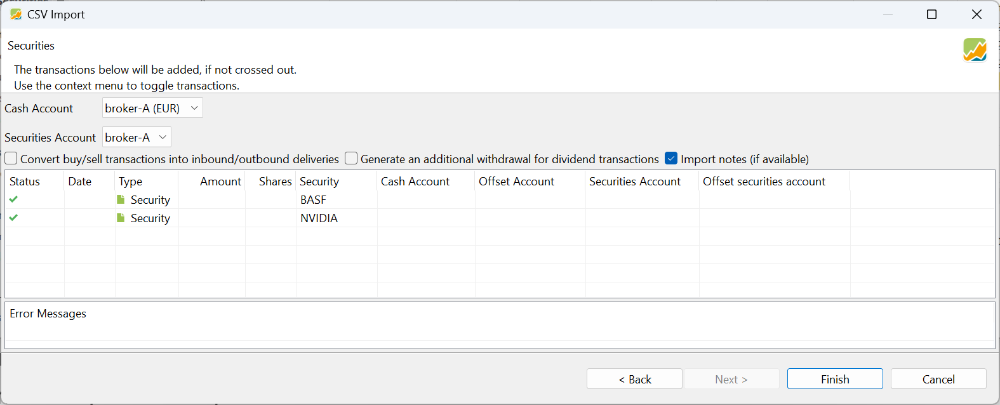
证券现已创建完毕，并出现在 全部证券 列表中。请注意，还有若干其他字段（如日历、附加属性与类别）无法通过 CSV 导入添加。历史价格的报价馈送可在下一步中部分添加（见图 4）。
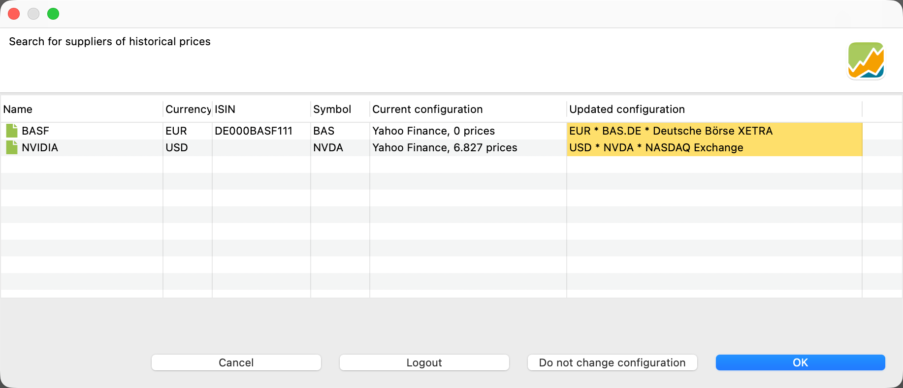
证券创建之后，还有一个额外步骤可让你搜索合适的报价馈送。系统会搜索 Yahoo Finance 与内置的 PortfolioPerformance 提供方。更新后并以黄色标示的配置将被应用，除非你点击 不更改配置 按钮。要真正从内置提供方读取历史报价，你必须处于登录状态（见内置提供方）。点击 取消 将跳过这一步，点击 确定 则读取历史价格。请注意，NVIDIA 股票的 ISIN 已填入，股票代码也已更正为正确的 BAS.DE。
2. 历史报价导入
大多数证券的历史价格已由内置报价提供方或其他来源涵盖（见上文）。不过，你有时仍需通过手工创建的 CSV 文件导入历史价格。为此，你只需要 CSV 文件中的两列：一列用于日期，另一列用于相应的报价。两者都是必填字段。没有可选字段。这些历史价格所属证券的名称必须在第二步中提供。如果任何必填字段缺失或拼写有误，你都无法进入下一步。
表 3：历史报价类型导入的可用字段
| Field Name | Required | Row 1 CSV | Row 2 CSV |
|-----------------|----------|-------------|------------|
| Date | Y | 2024-01-09 | 2024-01-08 |
| Quote | Y | 22,51 | 22,54 |
请注意，图 5 中的日期采用 YYYY-MM-DD 格式。双击输出面板的第二行（如 >>> 'Date'）可选择其他日期格式；例如 MM-DD-YY 或 dd-MMM-yyyy（当前语言），如 01-Feb-2026。请从 20 多种格式的列表中选出正确的一项。
在图 5 中，下一步 与 完成 按钮呈灰色，因为必要信息尚不齐全。顶部的消息"未映射必要字段：Quote," 给出了线索。在 CSV 文件中使用的字段名是 Price。它应映射到内部的 Quote 字段。双击该列并选择相应的映射字段，例如 Quote。随后 下一步 与 完成 按钮即可使用。在那里，你还可以选择小数点或逗号。
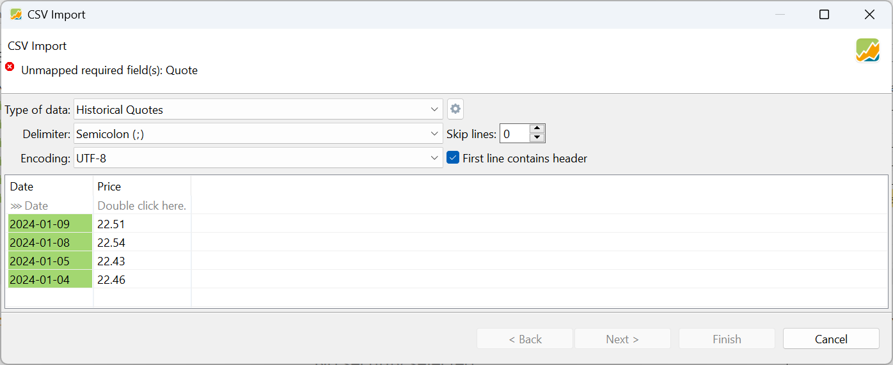
在向导的又一步中，你可以选择要把价格添加到哪一项证券。如果所选证券已有历史价格，新报价会被追加，而不会覆盖已有数据。
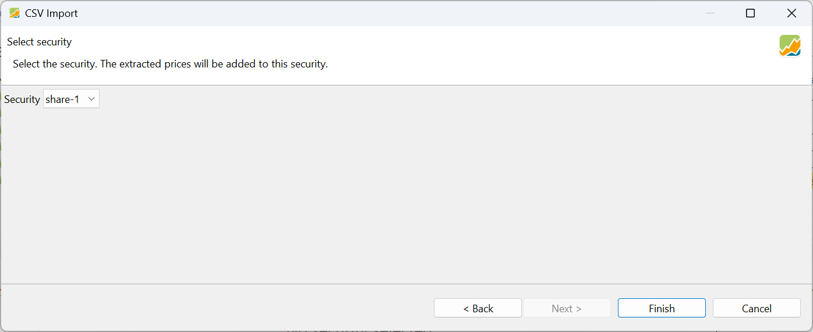
3. 证券账户导入
使用该导入类型，你可以在添加第一笔 买入 账目的同时创建一项新证券（见上文）。表 4 列出可接受的字段；只有 Shares 与 Value 是必填的，另外还需要 Ticker Symbol、ISIN、WKN 或 Security Name 之一。你可以提供 Quote 与 Date of Quote。这会在该日期上创建一条历史价格。不过，该报价不用于计算账目的价值（例如，Value = Shares x Quote）。与手动创建 买入 账目时一样，你可以创建一笔 '报价' 不同于历史价格的账目。在表 4 的示例 1 中，该笔账目的计算报价为 45 EUR（=900/20）。
表 4：证券类型导入的可用字段
| Field Name | Required | Row 1 CSV | Row 2 CSV |
|--------------------|----------|----------------|-----------|
| Shares | Y | 20 | 5 |
| Value | Y | 900 | 750 |
| Ticker Symbol | N | BAS | NVDA |
| ISIN | N | DE000BASF111 | -- |
| Security Name | N | BASF | NVIDIA |
| WKN | N | -- | -- |
| Currency | N | EUR | USD |
| Note | N | -- | -- |
| Date of Quote | N | -- | -- |
| Quote | N | -- | -- |
| Date of Value | N | 2026-04-05 | 2026-04-06|
| Time | N | -- | -- |
| Cash Account | N | -- | -- |
| Securities Account | N | -- | -- |
将创建两项证券，同时也会记录两笔 买入 账目（以 900 EUR 买入 20 份 BASF，以 750 USD 买入 5 份 NVIDIA）。无法包含费用或税款。为此，你需要使用 账户账目 或 投资组合账目 导入类型（见下文）。
如图 7 所示，证券与现金账户既可以通过对话框（上半部分）指定，也可以通过 CSV 文件指定。以 CSV 文件的取值为准。只有当 CSV 文件中未提供这些值时，程序才会回退到用户所选的账户。
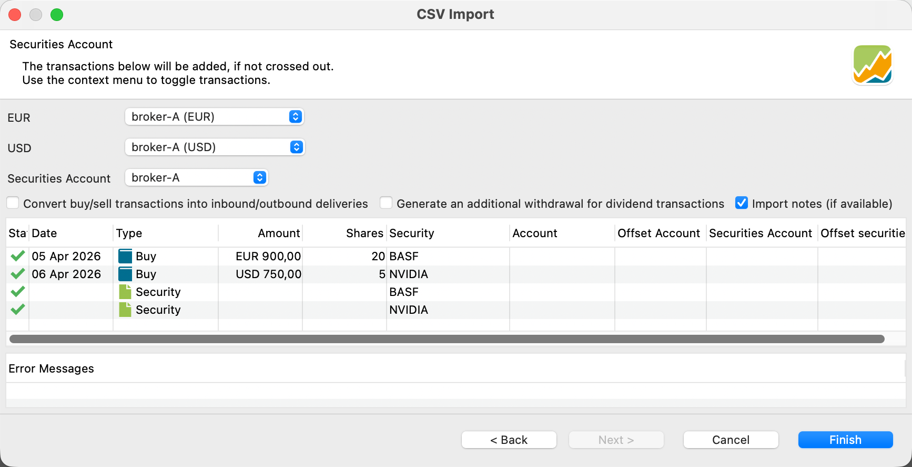
请注意，由于该证券的 Currency 被设为 EUR 或 USD，因此可以自动选出正确的现金账户。
4. 账户账目导入
账户账目 导入类型用于登记现金账户上的账目，例如存款、取款、利息等。这等同于使用账目菜单选项（第三组）手动记录一笔账目。必填字段为 Date 与 Value。
Important
账户账目与投资组合账目这两种导入类型非常相似。在内部，账户账目专用于处理现金账户及其账目（如存款）。投资组合账目则处理投资品及其账目：买入、卖出、证券转入/转出等。然而，买入／卖出账目同时具备两种成分：证券账户中有东西被增加／移除，同时现金账户中有资金被扣减／增加。在这种情形下，两种导入类型都可使用。
 良好实践！！！
良好实践！！！
存款、取款等请使用账户账目类型，买入、卖出等请使用投资组合账目类型。
表 5：账户账目类型导入的可用字段
| Field Name | Required | Row 1 CSV | Row 2 CSV | Row 3 CSV | Row 4 CSV |
|-----------------------|----------|-----------------|-----------------|---------------------|-----------------|
| Value | Y | 150 | 150 | 100 | 2 |
| Date (of Value) | Y | 2026-03-04 | 2026-03-04 | 2026-03-04 | 2026-04-06 |
| Time | N | -- | -- | -- | -- |
| Type (1) | N | Withdrawal | Deposit | Transfer (Outbound) | Fees |
| Shares | N | -- | -- | -- | -- |
| Ticker Symbol | N | -- | -- | -- | -- |
| ISIN | N | -- | -- | -- | -- |
| Security Name | N | -- | -- | -- | -- |
| WKN | N | -- | -- | -- | -- |
| Note | N | -- | -- | -- | -- |
| Gross Amount | N | -- | -- | 110 | -- |
| Fees | N | -- | -- | -- | -- |
| Taxes | N | -- | -- | -- | -- |
| Transaction Currency | N | -- | -- | -- | -- |
| Currency Gross Amount | N | -- | -- | USD | -- |
| Exchange Rate | N | -- | -- | -- | -- |
| Cash Account | N | broker-B (EUR) | broker-A (EUR) | broker-A (EUR) | broker-A (EUR) |
| Securities Account | N | -- | -- | -- | -- |
| Offset Account | N | -- | -- | broker-A (USD) | -- |
Type 字段可接受的取值为 Deposit、Withdrawal (or removal)、Dividend、Interest、Interest Charge、Fees、Fees Refund、Taxes、Tax Refund、Transfer (Inbound)、Transfer (Outbound)。也可以使用 Buy 与 Sell，但如前所述，用投资组合账目类型来做这件事是更好的实践。如表 5 所示，Type 是可选的。若省略该字段，当 Value 为负数时视为 Buy，为正数时视为 Sell。
表 5 与图 8 展示了该 CSV 文件中记录的四笔账目。请注意，允许的字段中只有一小部分具有实际取值：
- 2026-03-04 从现金账户
broker-B (EUR)中取出 150 EUR - 2026-03-04 向现金账户
broker-A (EUR)中存入 150 EUR - 从现金账户
broker-A (EUR)向现金账户broker-A (USD)转账 100 EUR。由于目标账户以 USD 设置（即 Currency Gross Amount），该 CSV 文件还指定了Gross Amount（= 110 USD）。由此得到的Exchange Rate为 0,9091 USD/EUR。目前尚不能指定汇率并让 PortfolioPerformance 计算Gross Amount。这种情况用转账账目处理比用"从broker-A (EUR)取款 100 EUR 与向 broker-A (USD) 存款 110 USD"两笔账目来处理更好。在 Portfolio Performance 中，存款与取款账目被视为外部现金流，因此会影响绩效计算。而这笔转账纯属内部转账，不应以任何方式影响绩效。 - 一笔 2 EUR 的费用，由
broker-A (EUR)账户为货币兑换而支付。
图 8 显示了此次导入的结果。请注意，字段 Gross Amount 与 Currency Gross Amount 未在此预览中显示，但确实已被登记。
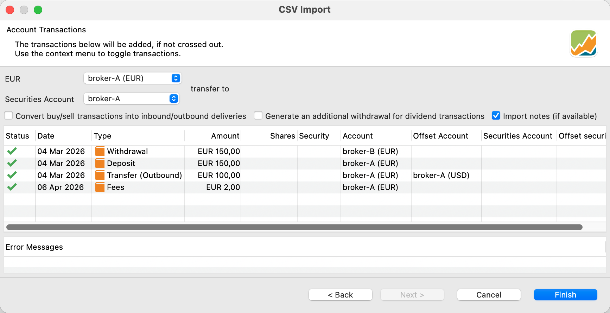
股息账目
需要特别注意的是，由于股息账目有其独特复杂性，尤其是境外股息，因此应单独处理。例如，当以某种货币支付的股息存入以另一种货币计价的账户时，可能会出现问题。
举例来说，3 份股票每股 5 USD 的股息，总额为 $15。按 0.9333 EUR/USD 的汇率换算后为 €14，并存入 broker-A (EUR) 现金账户。
该 CSV 文件包含日期、账目类型（如股息）、证券名称（NVIDIA）与份额数列。
Date; Type; Security Name; Shares; Value; Cash Account; Gross Amount; Currency Gross Amount;
2024-01-13; Dividend; NVIDIA; 3; 14; broker-A (EUR); 15; USD;
broker-A (EUR)，金额为 €14。这对应于总额 $15 USD。由于该笔账目是股息，现金必须由投资组合中某项货币与 Currency Gross Amount 一致的已有证券产生。
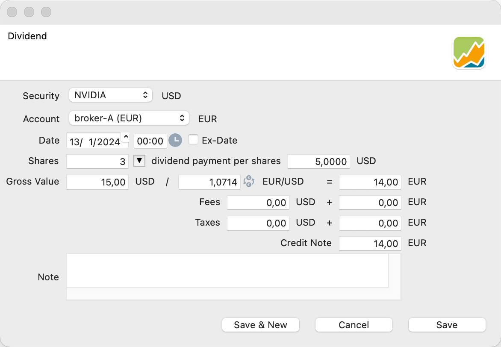
Important
遗憾的是，当前版本的 PortfolioPerformance 软件尚不支持在 CSV 导入过程中同时包含本币与外币的费用和税款。
5. 投资组合账目导入
值得一提的是，可以通过 CSV 文件中的专门列，把 Fees 与 Taxes 纳入 买入 或 卖出 账目。在这种情况下，税款与费用是从总值字段中扣除的（Value = Gross Amount + Taxes + Fees）。或者，你也可以创建一笔类型为 "Fees" 或 "Taxes" 的独立账目，并在 Value 列中指定金额。在这种情形下，费用与税款是加到该数值上的。
Important
如果你的账目涉及以多种货币计价的证券，良好实践是在 CSV 文件中明确写出 Securities Account 与 Cash Account 字段。由于 Date 是必填字段，请注意日期格式。
| Field Name | Required | Row 1 CSV | Row 2 CSV |
|-----------------------|----------|----------------|-----------------|
| Date | Y | 2024-01-04 | 2024-01-13 |
| Value | Y | 90 | 1740,98 |
| Shares | Y | 2 | 3 |
| Type (1) | N | Sell | Buy |
| Time | N | -- | -- |
| ISIN | N | -- | -- |
| Ticker Symbol | N | -- | -- |
| WKN | N | -- | -- |
| Security Name | N | BASF | NVIDIA |
| Transaction Currency | N | -- | -- |
| Fees | N | 5 | 15 |
| Taxes | N | 3 | 10 |
| Gross Amount | N | -- | -- |
| Currency Gross Amount | N | -- | -- |
| Exchange Rate | N | -- | 1,0837 |
| Note | N | -- | -- |
| Cash Account | N | broker-A (EUR) | broker-A (EUR) |
| Securities Account | N | broker-A | broker-A |
| Offset Account | N | -- | -- |
(1) Type 的允许取值为：Buy、Sell、Delivery (Inbound)、Delivery (Outbound)、Transfer (Inbound) 与 Transfer (Outbound)。
该导入类型需要三个字段：Shares、Date 与 Value，以及 ISIN、WKN、Ticker Symbol 或 Security Name 之一。在利息支付的情形下，Shares 字段并非必需。
假设你希望导入两笔投资组合账目：一笔是以 EUR 卖出 2 份 BASF，另一笔是以 USD 买入 3 份 NVIDIA。由于两种情形下都使用同一个 EUR 现金账户，那笔 USD 账目必须换算为 EUR。在这种情况下，PortfolioPerformance 会自动处理，因为 NVIDIA 证券以 USD 计价，而证券账户以 EUR 计价。或者，你也可以把 Currency Gross Amount 列指定为 USD。不过，更高效的工作流可能是定义 Cash Account，也可能还包括 Securities Account。这样可以避免导入时回退到诸如本例中的 broker-A 与 broker-A (EUR) 等标准账户。
图 11 展示了 已映射为字段 对话框。所有字段都被正确识别。建议确认所选格式与你的语言设置相符，尤其是在像本例这样以逗号作小数点时（可通过双击 Value 列访问）。
该 CSV 文件应如下所示。
Date;Type;Shares;Security Name;Value;Exchange rate;fees;taxes;Securities Account;Cash Account
2024-01-04; Sell; 2; BASF; 90; ;5; 3; broker-A; broker-A (EUR)
2024-01-13; Buy; 3; NVIDIA; 1740,98; 1,0837; 15; 10; broker-A; broker-A (EUR)
(Net) Value 字段是必需的，再添加 Gross Value 就没有意义，反正它也会被覆盖（Gross Value = Value + Fees + Taxes）。因此，我们在这种情况下使用 Exchange Rate 字段。请注意，在 BASF 那笔账目中该字段为空（或为零）。图 11 展示了此次导入账目的结果。
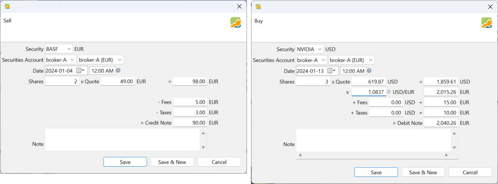
图 11 展示了导入向导的第一步。请确保在第 1 步中选中了投资组合账目这一类型；否则在第 2 步会出现错误。
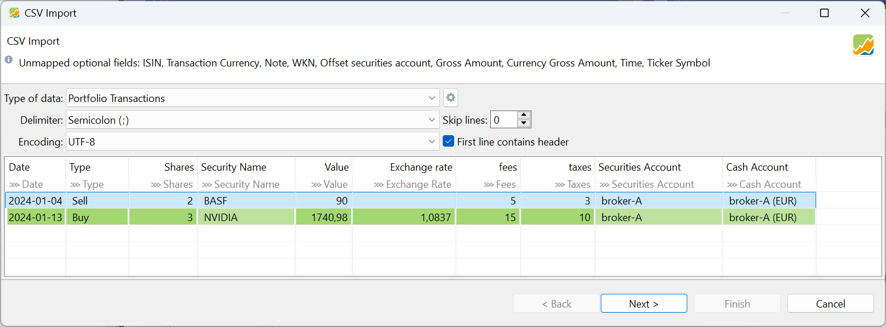
系统会进行一致性检查，以确保你卖出的证券没有超过投资组合中可持有的数量（见图 12）。
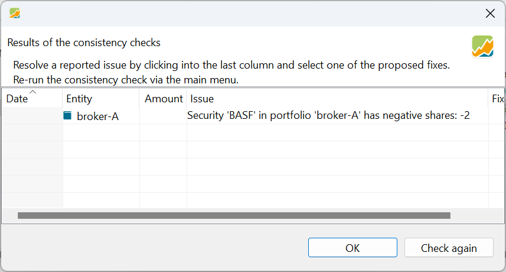